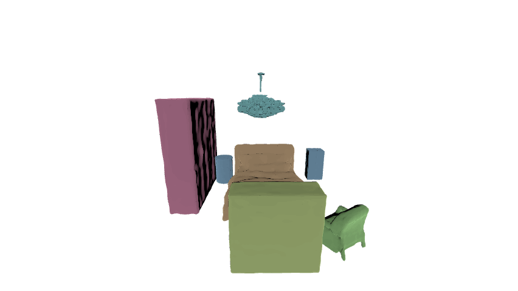
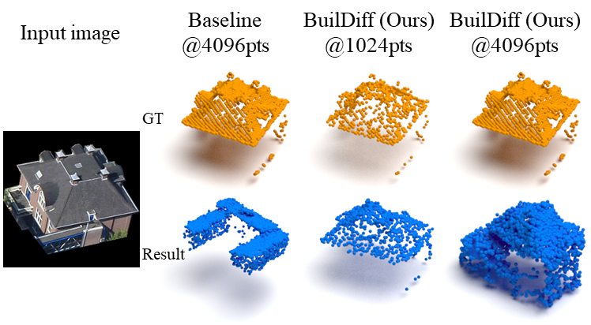
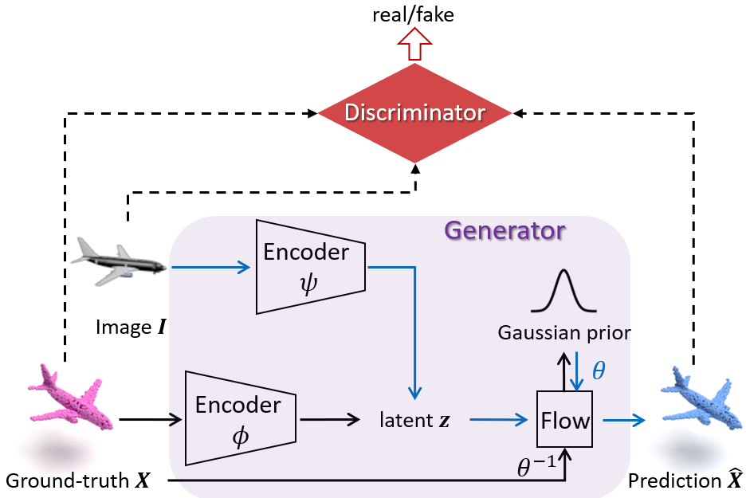
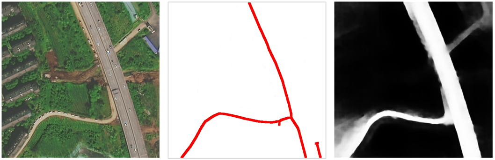
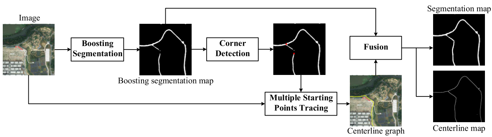
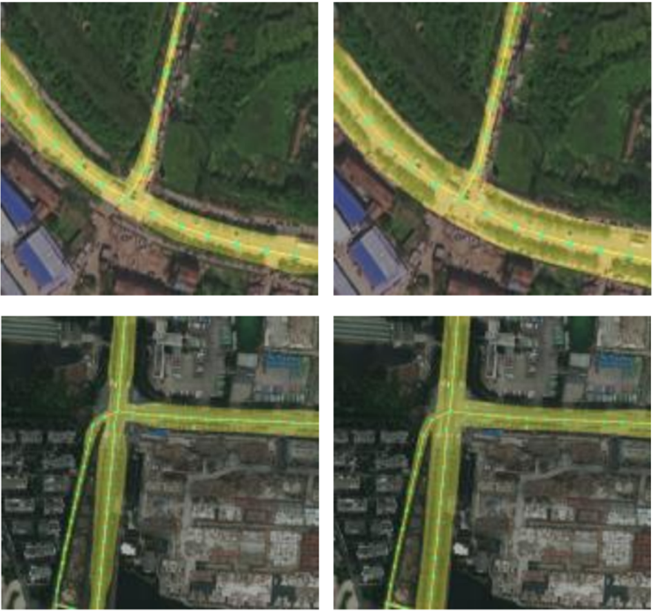
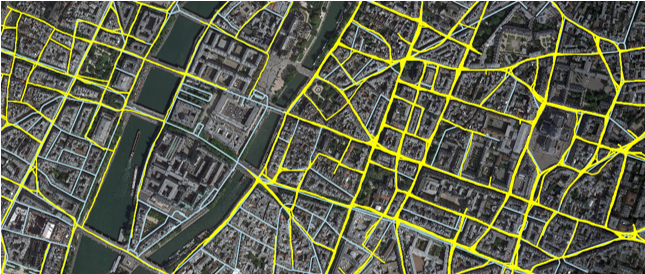

yao.wei@utwente.nl
PhD Student at ITC, University of Twente
7522NH Enschede, The Netherlands
[GoogleScholar] [ResearchGate] [LinkedIn] [ORCID]
More details can be found through my resume
|
Yao WEI yao.wei@utwente.nl PhD Student at ITC, University of Twente 7522NH Enschede, The Netherlands [GoogleScholar] [ResearchGate] [LinkedIn] [ORCID] More details can be found through my resume |
I am a PhD candidate at Faculty of Geo-Information Science and Earth Observation (ITC), University of Twente, under the supervision of Prof. George Vosselman. Meanwhile, I am a member of Scene Understanding Group led by Prof. Michael Ying Yang at University of Bath. My research interests include machine learning, 3D scene understanding and deep generative models.
      
I received the M.S. degree in photogrammetry and remote sensing from Wuhan University where I worked in road extraction from aerial and satellite images using deep learning techniques (Master Thesis), advised by Prof. Shunping Ji. Before that, I received the B.S. degree in geographic information science from China University of Petroleum, Qingdao, China.
If you are interested in my research or have any use cases that you would like to collaborate on, feel free to contact me!
Latest work🔥:
Yao Wei, Martin Renqiang Min, George Vosselman, Li Erran Li, Michael Ying Yang
Planner3D: LLM-enhanced Graph Prior Meets 3D Indoor Scene Explicit Regularization
2024 Under Review
[Homepage] [Preprint] Paper Code
Yao Wei, George Vosselman, Michael Ying Yang
BuilDiff: 3D Building Shape Generation using Single-Image Conditional Point Cloud Diffusion Models
2023 IEEE/CVF International Conference on Computer Vision Workshops (ICCVW)
[Preprint] [Paper] [Code]
Yao Wei, George Vosselman, Michael Ying Yang
Flow-based GAN for 3D Point Cloud Generation from a Single Image
2022 British Machine Vision Conference (BMVC)
[Preprint] [Paper] [Code]
Yao Wei, Shunping Ji
Scribble-based Weakly Supervised Deep Learning for Road Surface Extraction from Remote Sensing Images
2021 IEEE Transactions on Geoscience and Remote Sensing (TGRS)
[Preprint] [Paper] [Code]
🏆ESI Highly Cited Paper (Top 1%)
Yao Wei, Kai Zhang, Shunping Ji
Simultaneous Road Surface and Centerline Extraction From Large-Scale Remote Sensing Images Using CNN-Based Segmentation and Tracing
2020 IEEE Transactions on Geoscience and Remote Sensing (TGRS)
[Paper] [Code]
Other publications:
一种基于卷积神经网络弱监督学习的遥感影像道路分割方法 ZL202010771919.6 | 季顺平; 魏瑶 | 2020
Jingjing Yan, Shunping Ji, Yao Wei
A Combination of Convolutional and Graph Neural Networks for Regularized Road Surface Extraction
2022 IEEE Transactions on Geoscience and Remote Sensing (TGRS)
Yao Wei, Kai Zhang, Shunping Ji
Road Network Extraction from Satellite Images Using CNN Based Segmentation and Tracing
2019 IEEE International Geoscience and Remote Sensing Symposium (IGARSS)
[Paper] [Code]
一种同时提取遥感影像道路路面和中心线的深度学习方法 ZL201911228166.8 | 季顺平; 魏瑶; 张凯 | 2019
Presentations:
Poster | AI for 3D Content Creation (AI3DCC) , International Conference on Computer Vision (ICCV) | Paris, France | 2 October 2023
Poster | Summer School on Missing Data, Augmentation and Generative Models | Copenhagen, Denmark | 14 August 2023
Poster | British Machine Vision Conference (BMVC) | London, UK | 22 November 2022
Oral | Netherlands Center for Geodesy and Geo-Informatics (NCG) Symposium | Wageningen, Netherlands | 26 April 2022
Poster | IEEE International Geoscience and Remote Sensing Symposium (IGARSS) | Yokohama, Japan | 2 August 2019
Academic activities:
As a reviewer at CVPR, ISPRS Journal of Photogrammetry and Remote Sensing, IEEE Sensors Journal, Geo-spatial Information Science, International Journal of Digital Earth